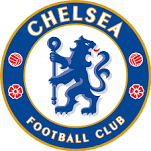

About Chelsea
첼시FC는 잉글랜드 런던을 연고지로 하는 축구 클럽이다. 1905년에 창단했으며 현재 잉글리시 프리미어리그에 소속되어 있다. 더 블루스라는 별칭으로도 불린다.
감독: 토마스 투헬홈구장: 스탬퍼드 브릿지
위치: 영국 런던
소속 리그: 프리미어리그, UEFA 챔피언스리그, UEFA 유로파리그, FA컴, EFL컴
마스코트: 스탬포드 더 라이언, Bridge the Lioness
첼시FC는 잉글랜드 런던을 연고지로 하는 축구 클럽이다. 1905년에 창단했으며 현재 잉글리시 프리미어리그에 소속되어 있다. 더 블루스라는 별칭으로도 불린다.
감독: 토마스 투헬